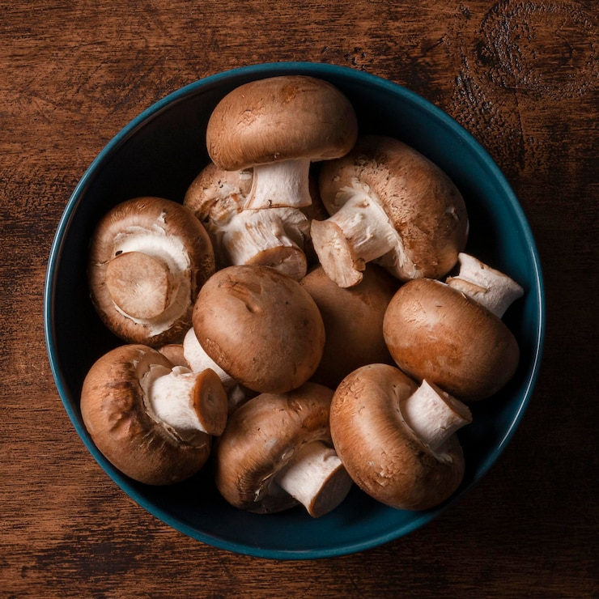
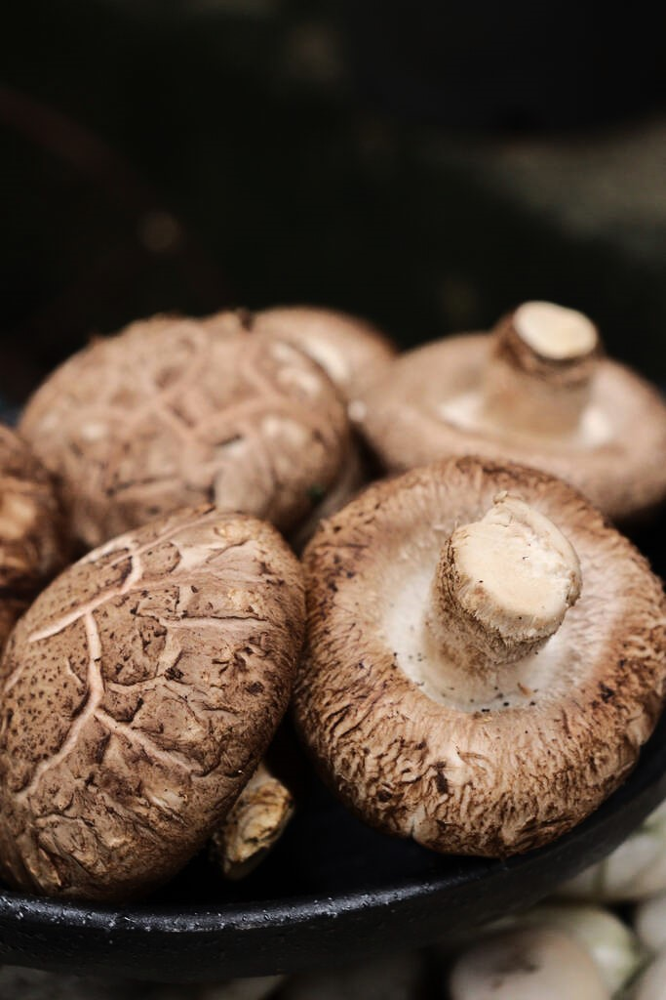
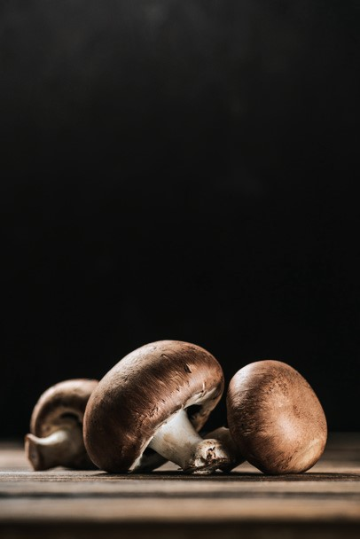
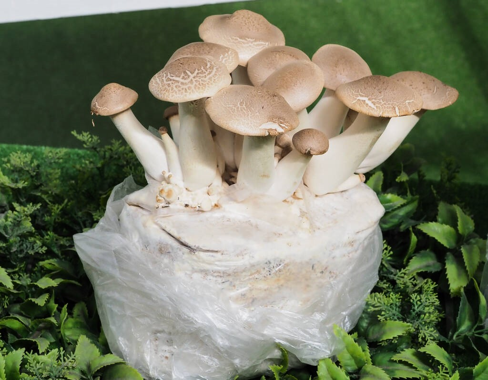
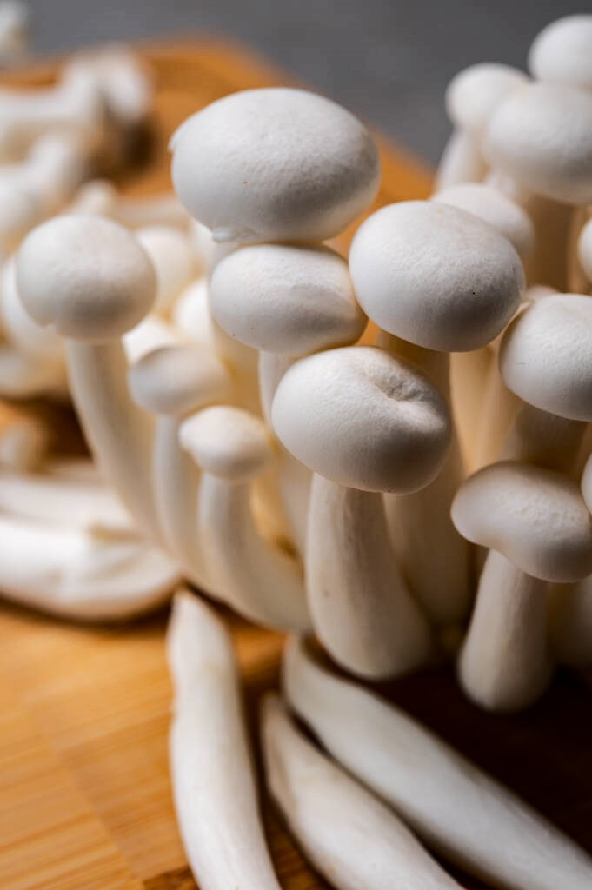

Welcome to Mushroom Palace

The button mushroom is one of the most common mushrooms used in cooking. It's small, white, and has a mild flavor.

Shiitake mushrooms are known for their rich, savory flavor and meaty texture. They are commonly used in Asian cuisine.

Portobello mushrooms are large, with a meaty texture. They're great for grilling and can be used as a meat substitute.

Oyster mushrooms have a delicate flavor and a soft, velvety texture. They are often used in soups and stir-fries.

Enoki mushrooms are small, thin, and white with a slightly sweet flavor. They are commonly used in salads and soups.

Maitake mushrooms, also known as "Hen of the Woods," are known for their rich flavor and multiple layers. They are often used in soups and stir-fries.